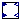
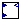
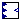

Type 3 wind turbine model
Extends from Modelica.Icons.Package (Icon for standard packages).
| Name | Description |
|---|---|
| Cp_function | Block for power coefficient (Cp) calculation |
| Multi_Powers | Multiplexer block for four input connectors |
|  Rotor_Model | Model with wind machine's rotor equations |
|  Turbine_Model | Type 3 wind turbine model |
|  Wind_Power_Model | Model for wind power in a type 3 machine |
Block for power coefficient (Cp) calculation
Block has two continuous Real input vectors u1 and u2 and one continuous Real output vector y. All vectors have the same number of elements.
Extends from Modelica.Blocks.Icons.Block (Basic graphical layout of input/output block).
| Name | Description |
|---|---|
| Lambda | Lambda |
| Theta | Pitch angle |
| y | Cp |
Multiplexer block for four input connectors
The output connector is the concatenation of the four input connectors. Note, that the dimensions of the input connector signals have to be explicitly defined via parameters n1, n2, n3 and n4.
Extends from Modelica.Blocks.Icons.Block (Basic graphical layout of input/output block).
| Name | Description |
|---|---|
| u1 | Input |
| y[5] | Multiple powers of the input |
Model with wind machine's rotor equations
| Name | Description |
|---|---|
| H | inertia [s] |
| Hg | [s] |
| wbase | |
| Dtg | |
| Ktg | |
| wt_x6_0 | [1] |
| wt_x7_0 | [1] |
| wt_x8_0 | [1] |
| wt_x9_0 | [1] |
| wndtge_ang0 | |
| wndtge_spd0 |
| Name | Description |
|---|---|
| Pm | Mechanical Power Input |
| Pe | Electrical Power Input |
| omega_gen | Engine shaft angular velocity |
| omega_turb | engine shaft angular velocity |
Type 3 wind turbine model
| Name | Description |
|---|---|
| GEN_base | [VA] |
| WT_base | [VA] |
| Kpp | |
| Kip | |
| pirat | [1/s] |
| pimax | [rad] |
| pimin | [rad] |
| pwrat | [1/s] |
| pwmax | [1] |
| pwmin | [1] |
| Kic | |
| Kpc | |
| Tp | [s] |
| Tpc | [s] |
| Kptrq | |
| Kitrq | |
| Dtg | |
| H | [s] |
| Hg | [s] |
| Ktg | |
| KI | |
| wndtge_kp | |
| wt_x0_0 | [1] |
| wt_x1_0 | [1] |
| wt_x2_0 | [1] |
| wt_x3_0 | [1] |
| wt_x4_0 | [1] |
| wt_x5_0 | [1] |
| wt_x6_0 | [1] |
| wt_x7_0 | [1] |
| wt_x8_0 | [1] |
| wt_x9_0 | [1] |
| wbase | |
| wndtge_ang0 | |
| wndtge_spd0 |
| Name | Description |
|---|---|
| Pelec | Electrical power |
| Wind_Speed | Wind speed |
| Pord | Active power command |
Model for wind power in a type 3 machine
| Name | Description |
|---|---|
| KI | |
| wndtge_kp |
| Name | Description |
|---|---|
| Wind_Speed | Wind speed |
| Theta | Pitch angle |
| omega | Turbine speed |
| Pm | Mechanical power |